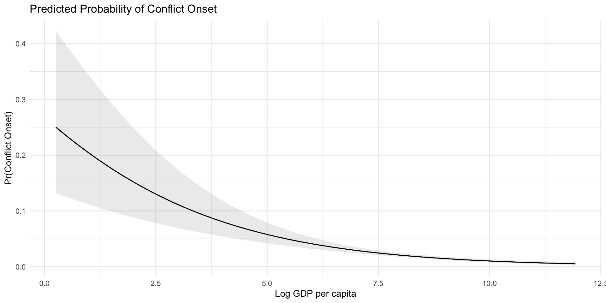
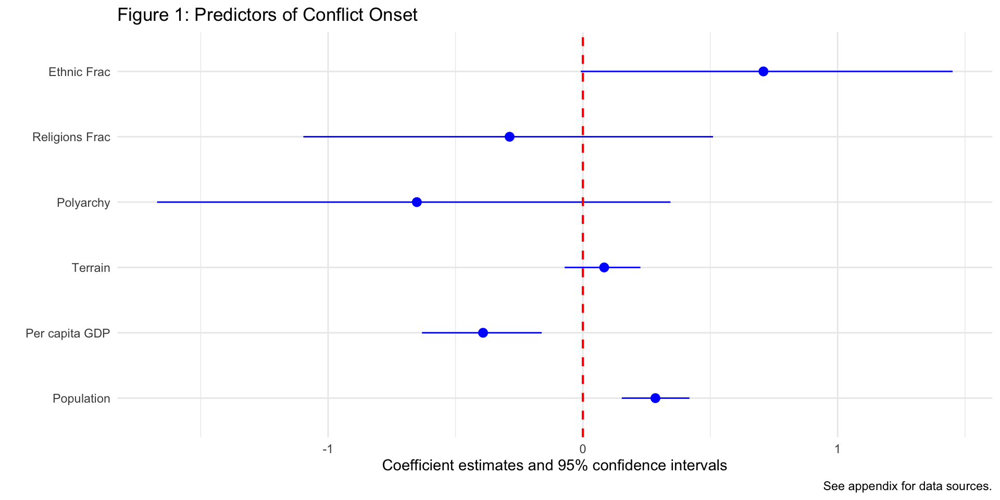

# A tibble: 2 × 3
term estimate p.value
<chr> <dbl> <dbl>
1 (Intercept) 0.365 1.47e- 2
2 wbgdppc2011est 0.700 2.31e-12Regression Tables
How to Interpret and Create
May 20, 2026
Interpreting Logistic Regression
The Model Equation
\[\log\left(\frac{p}{1-p}\right) = -1.16 - 0.33 \times \text{logGDPpc}\]
What Are Log-Odds?
- Logistic regression coefficients are on the log-odds scale
- The direction of the effect is easy to read: positive = more likely, negative = less likely
- But the magnitude is hard to interpret directly
- We need to transform the coefficients into something more intuitive
Odds Ratios
- Exponentiate the coefficient to get the odds ratio
- For each one-unit increase in the predictor, the odds of the outcome are multiplied by the odds ratio
\[OR = e^b\]
Interpreting the Odds Ratio
\[\log\left(\frac{p}{1-p}\right) = -1.16 - 0.33 \times \text{logGDPpc}\]
\(e^{-0.33} \approx 0.72\)
For each one-unit increase in log GDP per capita, the odds of conflict onset are multiplied by 0.72 — a 28% decrease in the odds of conflict onset.
Calculating Odds Ratios in R
Predicted Probabilities by Hand
Probability of conflict onset for a country with log GDP per capita of 9 (~$8,000):
\[\log\left(\frac{p}{1-p}\right) = -1.16 - 0.33 \times 9 = -4.13\]
\[\frac{p}{1-p} = e^{-4.13} = 0.016 \quad \Rightarrow \quad p = \frac{0.016}{1.016} \approx 0.016\]
Predicted Probabilities with marginaleffects
Code
# A tibble: 5 × 5
wbgdppc2011est estimate conf.low conf.high GDP_approx
<dbl> <dbl> <dbl> <dbl> <chr>
1 6 0.0411 0.0322 0.0525 ~$403
2 7 0.0291 0.0242 0.0351 ~$1097
3 8 0.0206 0.0175 0.0242 ~$2981
4 9 0.0145 0.0119 0.0176 ~$8103
5 10 0.0102 0.00784 0.0132 ~$22026 Visualizing Predicted Probabilities

Your Turn!
- Run a bivariate logistic regression with a different predictor (
v2x_polyarchy,ethfrac) - Use
tidy(..., exponentiate = TRUE)to get the odds ratio - Is the effect positive or negative?
- How much do the odds of conflict onset change per unit increase?
Multiple Logistic Regression
Multiple Logistic Regression
- Just as with linear models, we can also run multiple logistic regressions
- We can include multiple predictors in the model
- Usually we want to include our main predictor of interest and control variables
- The interpretation of the coefficients is the same as in the bivariate models
Download the data using the peacesciencer package if you haven’t already…
Example, including multiple predictors associated with conflict:
conflict_model <- glm(ucdponset ~ ethfrac + relfrac + v2x_polyarchy +
rugged + wbgdppc2011est + wbpopest,
data= conflict_df,
family = "binomial")
summary(conflict_model)
Call:
glm(formula = ucdponset ~ ethfrac + relfrac + v2x_polyarchy +
rugged + wbgdppc2011est + wbpopest, family = "binomial",
data = conflict_df)
Coefficients:
Estimate Std. Error z value Pr(>|z|)
(Intercept) -5.37638 1.41017 -3.813 0.000138 ***
ethfrac 0.70870 0.37172 1.907 0.056582 .
relfrac -0.28760 0.40945 -0.702 0.482425
v2x_polyarchy -0.65166 0.51253 -1.271 0.203563
rugged 0.08359 0.07564 1.105 0.269145
wbgdppc2011est -0.39172 0.12001 -3.264 0.001099 **
wbpopest 0.28469 0.06774 4.203 2.63e-05 ***
---
Signif. codes: 0 '***' 0.001 '**' 0.01 '*' 0.05 '.' 0.1 ' ' 1
(Dispersion parameter for binomial family taken to be 1)
Null deviance: 1205.0 on 6128 degrees of freedom
Residual deviance: 1147.9 on 6122 degrees of freedom
(1495 observations deleted due to missingness)
AIC: 1161.9
Number of Fisher Scoring iterations: 7Predicted Probabilities
Show the code
# select some countries for a given year
selected_countries <- conflict_df |>
filter(
gw_name %in% c("United States of America", "Venezuela", "Rwanda"),
year == 1999)
# calculate margins for the subset
marg_effects <- predictions(conflict_model, newdata = selected_countries)
# tidy the results
library(broom)
tidy(marg_effects) |>
select(gw_name, estimate, p.value, conf.low, conf.high) # A tibble: 3 × 5
gw_name estimate p.value conf.low conf.high
<chr> <dbl> <dbl> <dbl> <dbl>
1 United States of America 0.0115 1.63e-28 0.00527 0.0250
2 Venezuela 0.0136 1.88e-79 0.00876 0.0211
3 Rwanda 0.0331 3.17e-38 0.0201 0.0541Your Turn!
- Run a multivariate logistic model using conflict onset as the outcome variable
- Select alternative variables and/or alternative measures of the same variables
- Interpret some of the coefficients
- Calculate the predicted probability in a handful of country-years based on your analysis
Regression Tables
What’s in a Regression Table?

Regression Tables with modelsummary
- Oftentimes we want to show multiple models at once (like F&L)
- We want to compare across them and see which is the best model
- How can we do that?
- There are many ways to do this in R
- We will use the
modelsummarypackage
Run Multiple Models
ethnicity <- glm(ucdponset ~ ethfrac + relfrac + wbgdppc2011est + wbpopest, # store each model in an object
data = conflict_df,
family = "binomial")
democracy <- glm(ucdponset ~ v2x_polyarchy + wbgdppc2011est + wbpopest,
data = conflict_df,
family = "binomial")
terrain <- glm(ucdponset ~ rugged + wbgdppc2011est + wbpopest ,
data = conflict_df,
family = "binomial")
full_model <- glm(ucdponset ~ ethfrac + relfrac + v2x_polyarchy + rugged +
wbgdppc2011est + wbpopest,
data = conflict_df,
family = "binomial")Prep Data for Display
models <- list("Ethnicity" = ethnicity, # store list of models in an object
"Democracy" = democracy,
"Terrain" = terrain,
"Full Model" = full_model)
coef_map <- c("ethfrac" = "Ethnic Frac", # map coefficients
"relfrac" = "Religions Frac", #(change names and order)
"v2x_polyarchy" = "Polyarchy",
"rugged" = "Terrain",
"wbgdppc2011est" = "Per capita GDP",
"wbpopest" = "Population",
"(Intercept)" = "Intercept")
caption = "Table 1: Predictors of Conflict Onset" # store caption
reference = "See appendix for data sources." # store reference notesDisplay the Models
| Ethnicity | Democracy | Terrain | Full Model | |
|---|---|---|---|---|
| + p < 0.1, * p < 0.05, ** p < 0.01, *** p < 0.001 | ||||
| See appendix for data sources. | ||||
| Ethnic Frac | 0.733* | 0.709+ | ||
| (0.365) | (0.372) | |||
| Religions Frac | -0.429 | -0.288 | ||
| (0.409) | (0.409) | |||
| Polyarchy | -0.801* | -0.652 | ||
| (0.390) | (0.513) | |||
| Terrain | 0.035 | 0.084 | ||
| (0.075) | (0.076) | |||
| Per capita GDP | -0.485*** | -0.275*** | -0.553*** | -0.392** |
| (0.104) | (0.059) | (0.092) | (0.120) | |
| Population | 0.278*** | 0.300*** | 0.296*** | 0.285*** |
| (0.067) | (0.051) | (0.050) | (0.068) | |
| Intercept | -4.571*** | -6.184*** | -4.166*** | -5.376*** |
| (1.323) | (0.967) | (1.140) | (1.410) | |
| Num.Obs. | 6364 | 6955 | 6840 | 6129 |
Your Turn!
- Go to the peacesciencer documentation
- How close are our data to F&L’s?
- Could we change something to better approximate their results?
- Run multiple models using different predictors
- Display the models using
modelsummary - Try to get as close to F&L as you can!
Coefficient Plots
This don’t look too good…
Show the code
| (1) | |
|---|---|
| + p < 0.1, * p < 0.05, ** p < 0.01, *** p < 0.001 | |
| See appendix for data sources. | |
| Ethnic Frac | 0.709+ |
| (0.372) | |
| Religions Frac | -0.288 |
| (0.409) | |
| Polyarchy | -0.652 |
| (0.513) | |
| Terrain | 0.084 |
| (0.076) | |
| Per capita GDP | -0.392** |
| (0.120) | |
| Population | 0.285*** |
| (0.068) | |
| Intercept | -5.376*** |
| (1.410) | |
| Num.Obs. | 6129 |
So we can use ggplot to make a coefficient plot instead…
Show the code
library(ggplot2)
modelplot(conflict_model,
coef_map = rev(coef_map), # rev() reverses list order
coef_omit = "Intercept",
color = "blue") + # use plus to add customizations like any ggplot object
geom_vline(xintercept = 0, color = "red", linetype = "dashed", linewidth = .75) + # red 0 line
labs(
title = "Figure 1: Predictors of Conflict Onset",
caption = "See appendix for data sources."
) 
Your Turn!
- Take one of your models
- Use
modelplotto create a coefficient plot of it - Customize the plot to your liking
- Interpret the results
- Discuss advantages of coefficient plots with a neighbor